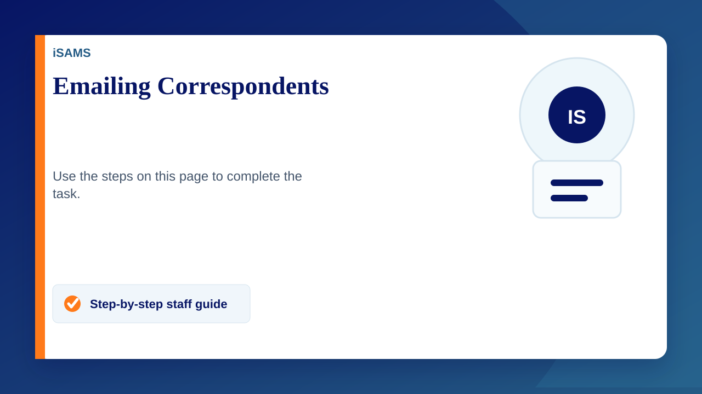
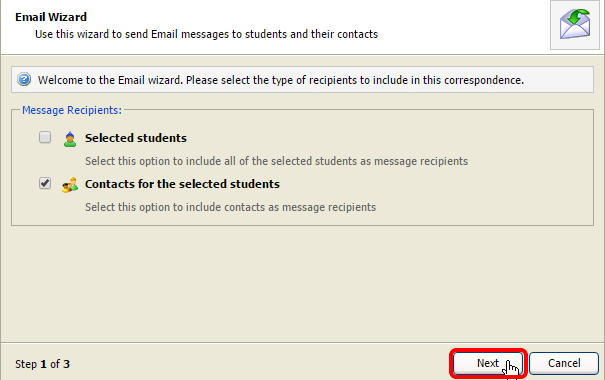
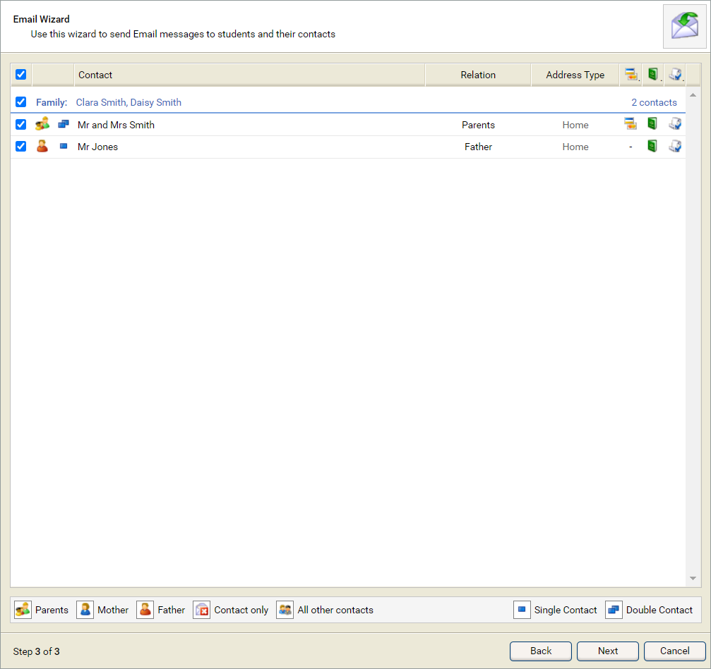
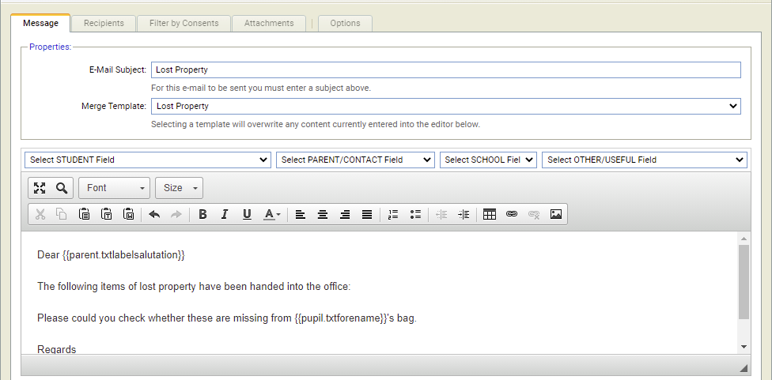
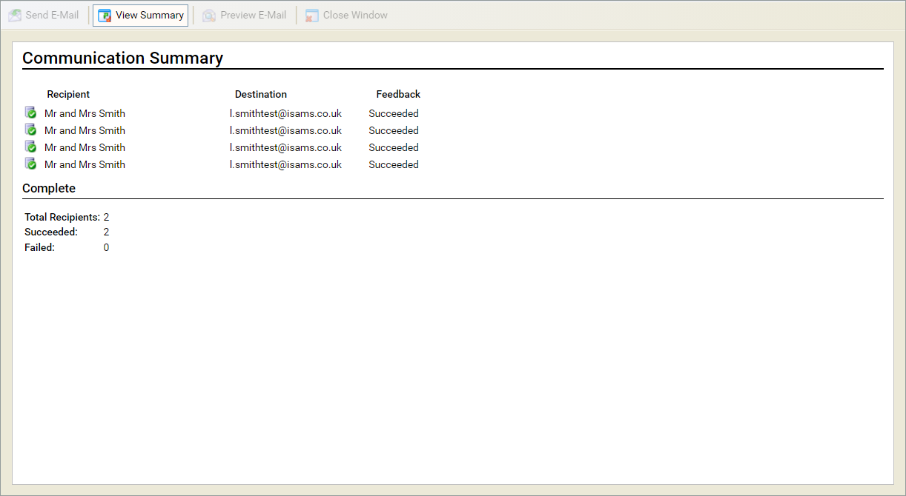

Emailing a Correspondent
- Open the Student Manager module.
- Select the Current Students tab and use the Basic tab to search for the student record(s) that you want to work with
- Click Search to find student records
- Select the checkboxes by the students you wish to send an e-mail to
- Use the P/S drop down list to change the number of records you wish to work with from the search results. For example, if you want to select all records from the search results (not only the results displayed in the page), select 'P/S - All'.
- Open the pink drop down list in the top right of the screen and select Email Wizard. The Email Wizard is displayed.
- Check the box for Contacts for the selected students
- Click Next
- Select all relation types
- Go to the "Filter by Contact Type" and tick correspondence - IMPORTANT
- Tick/untick who you want to email
- Click next
- Type your email
Email templates are avaliable - Select the Recipients tab and confirm the recipients of the e-mail
- Select the Attachments tab and upload attachments, as required.
You can also delete attachments uploaded in error from this screen. - Use the Options tab to set e-mail properties
- Click Send E-Mail
- Click View Summary to check on the status of the e-mail delivery



